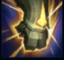
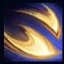
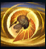
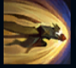
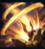

Galio
| Galio The Sad Mummy | |
|---|---|
| Release date | 10.08.2010 |
| Class | Warden |
| Positions | Middle, Support |
| Resource | Mana |
| Range type | Melee |
| Adaptive type | Magic |
| Base statistics | |||
| Health | 562 – 2466 | Mana | 500 – 1180 |
| Health regen. | 8 – 21.6 |
Mana regen. | 9.5 – 21.4 |
| Armor | 24 – 83.5 | Attack damage | 59 – 118.5 |
| Magic resist. | 32 – 53.25 | Crit. damage | 175% |
| Move. speed | 335 | Attack range | 150 |
Lângă porțile strălucitorului oraș demacian, Galio, colosul de piatră, stă de veghe. Construit ca apărător împotriva magilor inamici, Galio poate sta nemișcat decenii în șir, până când prezența magiei îl trezește la viață. Când e însuflețit, se bucură din plin de timpul pe care-l are la dispoziție, savurând luptele și deosebita onoare de a-și apăra poporul. Însă triumfurile sale nu-i dau motive de fericire: forțele magice pe care le distruge sunt și sursa reanimării sale, iar fiecare victorie înseamnă un alt somn îndelungat. |  |
LOVITURA COLOSULUI O dată la fiecare câteva secunde, următorul atac de bază al lui Galio provoacă daune magice bonus într-o zonă. |
||
|---|---|---|---|---|
 |
RAFALE NIMICITOARE Galio lansează două rafale de vânt care se unesc, formând o tornadă uriașă care provoacă daune în timp. |
|||
 |
SCUTUL LUI DURAND Galio își pregătește o ipostază defensivă și se deplasează mai lent. Când își încheie pregătirea, îi provoacă și îi lovește pe inamicii din jur. |
|||
|  |
PUMNUL JUSTIȚIEI Galio face un pas în spate, apoi se năpustește înainte, aruncând în sus primul campion inamic pe care îl întâlnește în cale. |
|||
 |
INTERVENȚIE EROICĂ Galio țintește poziția actuală a unui aliat, către care va sări eroic, oferindu-le tuturor aliaților din zonă un scut magic. După o scurtă perioadă de pregătire, Galio se avântă spre locația respectivă, aruncând în sus inamicii din apropiere. |